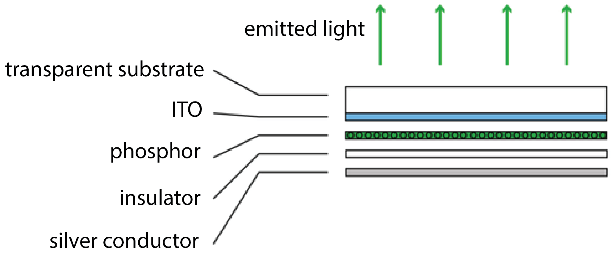
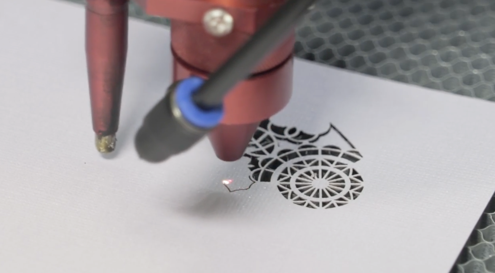
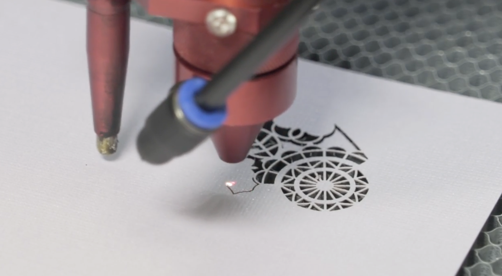
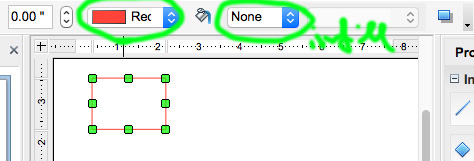
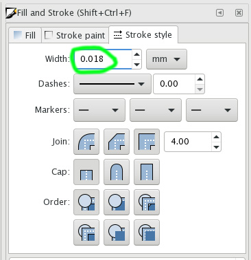
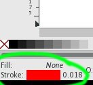
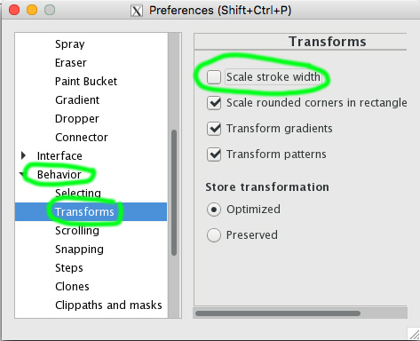
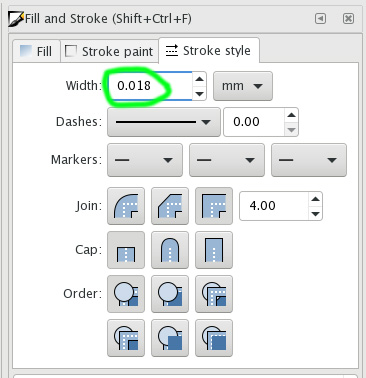
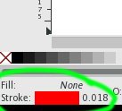
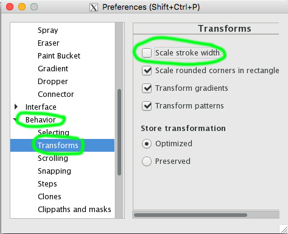

6.810 Engineering Interactive Technologies (fall 2020)
Electroluminescent Displays + Electronics on 3D Surfaces
In the next two labs, we will build an interactive mug. It can sense its own temperature and display how hot it is with an electroluminescent display that we will print in this lab. The final product should look like this:
(insert picture of the mug here)
Your Task for Today:
Fabrication and Control of Electroluminescent Displays
For today, we will focus on printing the electroluminescent display and building the controller circuit to turn it on and off.
Recall from the 'display' lecture that electroluminescent displays consist of 4 layers: two conductive layers that sandwich the light emitting phosphor layer. The top conductive layer is transparent (ITO on transparent substrate) otherwise you wouldn't be able to see the phosphor glow. The bottom conductive layer is silver. To avoid shorts, we also have an insulating dielectric layer that prevents the two conductive layers from touch.
When you look from the top, the display layers would look like this.

However, for ease of fabrication, we will fabricate the display up-side-down, i.e., we will start with the ITO sheet (ITO on transparent substrate), then add the phosphor, then add the dielectric, then add the silver last.

Fabricating the Display:
ITO, Phosphor, Dieletric: Done, Silver: Missing.
We already prepared three of the layers for you.
Before class, we took the transparent ITO sheet, and already put phosphor and the dieletric insulator on it.
Your task is to add the last missing layer: the silver conductor.
The reason we prepared the other layers for you is that it would otherwise take too much time in class, since after each layer you have to wait for the layer to dry.
For your group project, feel free to ask us how to do the remaining layers as well.
As you can see in the photo, we want to print a display shaped as a steaming coffee mug.
Looking at the square-shaped display we gave you, you may be wondering how we can transform that square to the coffee-mug shape?
The trick here is that the displays will only emit light in those areas where you print silver and will stay dark everywhere else. The reason for this is that only where you put silver, you will actually have a bottom electrode (ITO sheet) and a top electrode (silver). All other areas only have a bottom electrode and thus will not light up.
In order for you to be able to apply the silver in the form of the coffee mug, we will use a laser cutter to fabricate a stencil that will give the display its shape. Once you have the stencil, we will place it on the other display layers and then use airbrushing of copper ink to spray the layer.
Laser Cutting a Stencil for Spraying Silver
We already prepared the stencil design for you, but you still have to laser cut it.
Below you see how a laser cutter looks like and on the right side you see how it cuts out the stencil.
 

(1) Download the Stencil Design
Download the svg file of the coffee mug design here. (ask Ticha to make one)
(2) Open Stencil Design in Drawing Program
Next, open the file in your favorite vector design program (e.g. Adobe Illustrator, InkScape, OpenDraw).
The mug should look like this:

(3) Check Drawing Size
First, check if the mug design has the right size.
It should be around 2"x2", 5x5cm or 500x500 pixel.

(4) Check Line Color and Thickness
Next, check that you have the right line color and line thickness selected (more info below).
The reason we have to check the line color and line thickness is that laser cutters operate in two modes.
In vector mode a line is treated as a path along which the laser cuts. This results in a smooth laser motion along the outline of the mug.
In raster mode a line is treated as an area and each pixel in that area will be engraved/rastered, the laser does not follow the outlines of the shape and thus the design is not cut.
The laser differentiates which mode it's supposed to use by the line thickness and line color in your drawing.
Thus, make sure that your drawing has the following settings otherwise the laser cutter will not be able to process it:
OpenDraw:
- from the outline colors, select 'Red'
- click infill and say 'None'

Adobe Illustrator:
- set document mode to RGB (Menu: File -> Document Color Mode -> RGB)
- when you create your shape, make sure there is only a line color but no infill
- the outline needs to have pure red as color (R: 255, G: 0, B:0)
- the stroke thickness should be 0.00001 (Window -> Stroke -> Weight), the moment you hit enter it will snap to 0 but internally it will still be 0.00001 so you should be all set
 InkScape:
InkScape:
- if you don't see your object, make sure opacity is 100%
- set stroke width to 0.018mm ()
- then disable stroke width auto-scaling: Edit -> Preferences -> Behavior -> Transforms -> Uncheck "Scale stroke width."
 





(5) Laser Cut your Stencil (Go to a Laser Cutter Office Hour)
Next, go to one of the laser cutting office hours this week and laser cut your stencil.
Once you are in the workshop, save your drawing as a pdf, then transfer it to the laser cutter computer via USB stick or via email.
Open it with Acrobat Reader.
Then go to File -> Print.
Select the Laser Cutter from the dropdown menu (e.g. the Universal Laser Cutters are called PLS150D (in EDS) or ILS9.150D (in IDC).
Hit the print button.

 Open the laser cutter software by clicking on the ULS Control Panel Icon on the desktop (it's a small red diamond).
You should see your drawing in the software.
Your drawing should have a bright red color in the view, if it is black it will not work (either your line thickness is too thick or you set the wrong color mode when making the drawing).
Open the laser cutter software by clicking on the ULS Control Panel Icon on the desktop (it's a small red diamond).
You should see your drawing in the software.
Your drawing should have a bright red color in the view, if it is black it will not work (either your line thickness is too thick or you set the wrong color mode when making the drawing).

(6) Set Power and Speed Settings for your Material Sheet
Each material needs different power and speed settings.
Cutting a sheet of paper needs less power than cutting a piece of wood.
We will cut our stencil from a transparent adhesive sheet, thickness 1mm.
The adhesive part will make it easy to attach the stencil to the existing three display layers.
The transparency will help us in seeing if we apply the stencil in the correct area.
In the laser cutter software, click the 'settings' button (see previous image).
In the pop-up, you need to set power and speed for the color of your drawing (e.g. red). Since it is not obvious what the right power/speed is, we are going to use the software's 'material database'.

 In the material database, scroll down to Which settings are we using Michael?, then insert the thickness of your sheet Which settings are we using Michael?. Once you hit the 'apply' button, the values will be transfered back to the previous power/speed window and you will see that the values for the color red have changed.
In the material database, scroll down to Which settings are we using Michael?, then insert the thickness of your sheet Which settings are we using Michael?. Once you hit the 'apply' button, the values will be transfered back to the previous power/speed window and you will see that the values for the color red have changed.

 Click the big 'set' button and you are all set.
Click the big 'set' button and you are all set.
(7) Insert Material


(8) Align 2D Drawing with Material Sheet


(9) Turn on Compressor + Filter + Laser Cutter
First, turn on the laser cutter.
The switch is on the right side of the laser cutter both in IDC and EDS.

 In EDS, Compressor and Filter are under the laser cutter:
In EDS, Compressor and Filter are under the laser cutter:
 In IDC, Compressor and Filter:
The console is on the left wall.
Push the green 'on' button to start the filter + compressor.
When you are done cutting, push the 'off' button to turn everything off.
In IDC, Compressor and Filter:
The console is on the left wall.
Push the green 'on' button to start the filter + compressor.
When you are done cutting, push the 'off' button to turn everything off.

 The big red button is the emergency button.
If the laser cutter does not turn on, the button might have been pushed in by somebody. Double check with Chris or a TA, then pull it out.
The big red button is the emergency button.
If the laser cutter does not turn on, the button might have been pushed in by somebody. Double check with Chris or a TA, then pull it out.
 Only after compressor and filter are on, hit start.
Only after compressor and filter are on, hit start.
 fyi: The ventilation sucks away the dust particles that are created during the cutting process.
fyi: The compressor puts the lens chamber under pressure. This prevents the dirt particles from entering the lens chamber and getting stuck to the lens, which then cause burn spots on the lens and eventually break it.
fyi: The ventilation sucks away the dust particles that are created during the cutting process.
fyi: The compressor puts the lens chamber under pressure. This prevents the dirt particles from entering the lens chamber and getting stuck to the lens, which then cause burn spots on the lens and eventually break it.
(10) Double Check Before Laser-Cutting
Before you start the laser cutter, double check that you have done all of the following:
1. The material is inside the laser cutter flush against a corner
2. Your cut in the software is all over material
3. The laser is focused
4. The power and speed are appropriate for the material you are using
5. The ventilation is on
6. The compressor is on
Be sure to watch the laser cutter the entire time it is running.
If something goes wrong, calmly hit pause on the laser cutter, and ask for help as necessary.
Applying the Stencil on the El Display Sample
By now you should have your laser cut stencil at hand.
Next, we want to apply it onto our EL display sample to be able to spray the last layer.
First peel the protective layer from the back side of the foil.
The foil should be adhesive on one side.
Stick the stencil as good as you can on top of the display sample.
Make sure that the cut out coffee mug covers the white areas completely.
It should not cover the area where you put the copper tape before.
Spraying the Silver Layer Across the Stencil (Go to a Spraying Office Hour)
Next, go to a spraying office hour this week to spray your stencil.
When you arrive, we will already have cleaned the airbrush for you (see the end of this tutorial on how to do this yourself if you need to spray something yourself.)
First, you need some material for spraying.
The copper ink we need comes in these cans.
Before you can use them, you need to shake the ink for at least 2-3 minutes.
Otherwise the copper particles seperate and you will either clog the airbrush up or the sprayed liquid is not conductive at all.
Let's shake the can a bit.


To double check that nothing is at the bottom of the can anymore, you can also use a wooden stick, put it inside the can and see how the consistency is when you pull it out. If you still see any particles or clumpy parts you definitely need to shake some more.
Let's do that test.


While we know you are the shake-master, we can still not 100% be sure that all the particles are dissolved.
Therefore, we use a filter (XX micron) to pour the ink through to make sure that really nothing enters the airbrush that shouldn't enter it.
Before you use the filter, cut off the top area that you don't need and that makes the filter unnecessary bulky.
We only need the part at the bottom that has the 'fabric' filter net.
Fill the tank until about 2/3rds or less with ink.


 Now you are ready to spray.
Now you are ready to spray.
Turn on the compressor if it isn't on already.
Push the button down to open the valve between the compressor and the airbrush.
If you push the button down, you should feel air coming out from the front of the airbrush but no ink yet.
Once you have confirmed that air is flowing, push the button down and slowly pull it back towards you. This will start the ink flow.
The further you pull it towards you, the more ink will come out.
For spraying conductive ink, we always want to pull it back to the maximum.

When you spray, you want to have even coverage.
Aim for ca. 50% overlap between traces.
For conductive surfaces, you need to spray the entire surface first horizontally (left to right) and then afterwards also do a vertical pass (top to bottom).
You need to repeat this at least 5 times to make sure the entire area is covered and there are no non-conductive patches.
Also while you spray, make sure you have quite some distance between the airbrush and the object. If you are too close drops will from on the surface leading to uneven coverage.
Use a multimeter to check of you reached sufficient conductivity.

Once you are done spraying, you need to let your object dry for at least 4 hours.
After ca. 30 minutes, the ink will not smear anymore but it is not yet completely dry.
Before you leave, make sure you turn off the compressor and most importantly, clean the airbrush (you don't have to do it this time since a fellow student from class is probably coming in soon).
Testing if the Silver Layer is Conductive
Next, we have to test if the silver is conductive.
As in lab 1, use a multimeter and check if the layer is conductive.
You should read something around 1Ohm resistance.
Before you go back to your dorm room, the teaching team will also do a quick test to see if your display will light up.
Please ask somebody to test it with you.
You will later replicate the electronics when you are back in your dorm room.
Connecting your EL Display to a Power Supply
Let's connect your display to a power supply and light it up!
EL displays require an alternating current between the two elecrodes to excite the phosphor and make it light up.
Therefore, just connecting it to a 12V DC power supply (I thought Arduino is 5V? Arduino is DC? We should explain this more here, this is not obvious.) won't do the trick.
We therefore use an inverter to generate 110V AC from a 12V DC power supply.
Warning! The 110V are low current and not really dangerous, but they can give you an unpleasant shock. Therefore, never plug the display in when the electrodes are exposed (what does this mean?). Also never hold the display in your hands when the electrodes are exposed and the display is plugged in!
The inverter is in your fabrication bag.
Take it out along with the 12V power supply that we also put in the bag. Your first step is to connect the inverter to the power supply (but leave the power supply unplugged).
(picture here)
Now, take your EL display and put some copper tape on the silver (and only the silver) layer that you just printed. Again, leave a little flap that makes it easier to connect a crocodile connector to it.
Next, take two crocodile wires and connect the two electrodes of your display to the two wires of the inverter. The order doesn't matter.
Turn the display around such that you see the top side. The silver should be on the bottom now and you can't see anymore.
When this is done, there is only one thing left. Plug in the power supply to your power outlet. You should see a bright EL display in the shape of the coffee mug now. If you see that, congratulations. If not, check if all wires are connected properly or ask for some help from the TAs.
Preparing the display sample
You will notice that the printed layers (white) do not cover the entire sample. There is a bar that is still transparent. This area allows us to get access to the ITO layer. We will connect our power supply to the ITO. The best way to do that here is to use copper tape.
Take the copper take from your fabrication bag and glue the tape over the entire bar such that it is completely covered and make it even a bit longer (about 1" (2.5cmn)). The copper tape connects to the ITO and we need this little flap to connect it to a power supply later in the tutorial.
Building the control circuit for EL Displays
The goal of this final part of the lab is to build a control circuit that lets you turn on and off the display and even set it's brightness (e.g. dimming it down). The ESP32 does not have a suitable AC switch built-in. Thus, we have to build or own. We will use a Triac to switch it and an optocoupler to control the triac from the ESP32. Below you see the schematic of the circuit. Get yourself a breadboard, wires and the components and start building it.
Write the controller program
Great! We can now control EL displays with the pins of the microcontroller. Next, we have to write a script that lets the display blink. This is very simple with the circuit you already built. Check again, to which pin you connected the optocoupler and us digitalWrite(pin,HIGH) to turn it on, and digitalWrite(pin,LOW) to turn it off.
You can also dim it by using the PWM signal of the ESP pins. Replace the digitalWrite command with these two commands:
// the number of the LED pin
const int ledPin = 16; // 16 corresponds to GPIO16
// setting PWM properties
const int freq = 5000;
const int ledChannel = 0;
const int resolution = 8;
void setup(){
// configure LED PWM functionalitites
ledcSetup(ledChannel, freq, resolution);
// attach the channel to the GPIO to be controlled
ledcAttachPin(ledPin, ledChannel);
}
void loop(){
// increase the LED brightness
for(int dutyCycle = 0; dutyCycle <= 255; dutyCycle++){
// changing the LED brightness with PWM
ledcWrite(ledChannel, dutyCycle);
delay(15);
}
// decrease the LED brightness
for(int dutyCycle = 255; dutyCycle >= 0; dutyCycle--){
// changing the LED brightness with PWM
ledcWrite(ledChannel, dutyCycle);
delay(15);
}
}
Checkoff 3: Show your EL display and let it blink
Airbrushing Hardware
To airbrush, you need a compressor that creates air pressure and you need a spraygun, which is connected to the compressor.


Safety Equipment
Make sure you are wearing gloves, a lab coat, and a mask before you start spraying or cleaning.
Extensive Cleaning the Airbrush
Before you can airbrush anything, you need to clean the airbrush.
If the airbrush has not been used for 3 or more days, you need to perform the extensive cleaning as outlined below.
If the airbrush was in use more recently, you can do the light cleaning procedure explained in the next section.
First you need to screw off the back of the airbrush as shown below.

Also open up the metal screw at the back (check where the fingers are pointing.
You don't have to remove it, but you need to open it so the needle (metal stick sticking out can move back and forth).
Next, screw off the front part of the airbrush like shown below.


Also screw off the golden part from the front (compare the left and right image, see both components on the table in the back on the right image).

Next, remove the needle from the airbrush casing.
Depending on how dried out the inks were, the harder it may be to remove the needle.
Hammer it on a covered surface to remove, but please only apply force on the backside not the front.


Next, put some laquer thinner on a paper tissue.
Rub the needle with the paper tissue. Only rub from one side, applying motion from the back (non-sharp) towards the front (sharp side). Never rub back and forth or you will hurt yourself with the needle tip.


Put the needle aside and clean the back (Michael??) parts as well.
For this, you first have to further disassemble them.


Once you have the three parts on the table as shown above, you can clean them.
For this, put a bit of laquer thinner into a cup.
Then use the needle of the airbrush, dip it into the laquer thinner, and then insert the needle into the different components and rub it a bit around to remove any debris inside the part.
If you have Qtips you can also use a Qtip.


Now that you have everything cleaned, you need to put everything back together!
First insert the needle into the airbrush.
Then assemble and attach the front pieces.
Then assemble and attach the back piece and add the back enclosure.
Light Cleaning the Airbrush
You need to perform this procedure if the airbrush was not used in the last 15 minutes but within the last 3 days (yes ink dries inside quickly).
You also need to perform this procedure if you want to switch to a different ink.
Before starting, turn on the compressor.
First, fill some laquer thinner into the airbrush tank until about 2/3 full.

Next, press your finger onto the front of the airbrush where the air / ink normally exits.
It's a good idea to use your non-dominant hand for this (i.e. if you hold the airbrush with your right hand, use the thumb of your left hand to close the front of the airbrush).

While pressing really hard with your thumb to keep the front of the airbrush closed, push down on the airbrush knob to open the air connection to the compressor. You should feel air pressing towards your thumb. Keep it closed.
Now while carefully slowly pulling back on the airbrush knob, you will see that the laquer thinner in the tank will start to bubble. Slowly pull the airbrush know further back until you see a decent amount of bubbling. Hold everything in this position for about 1-2 minutes to give the tank a good cleaning.

Once you are done, turn off the compressor.
Fabrication and Control of Electroluminescent Displays
ITO, Phosphor, Dieletric: Done, Silver: Missing.